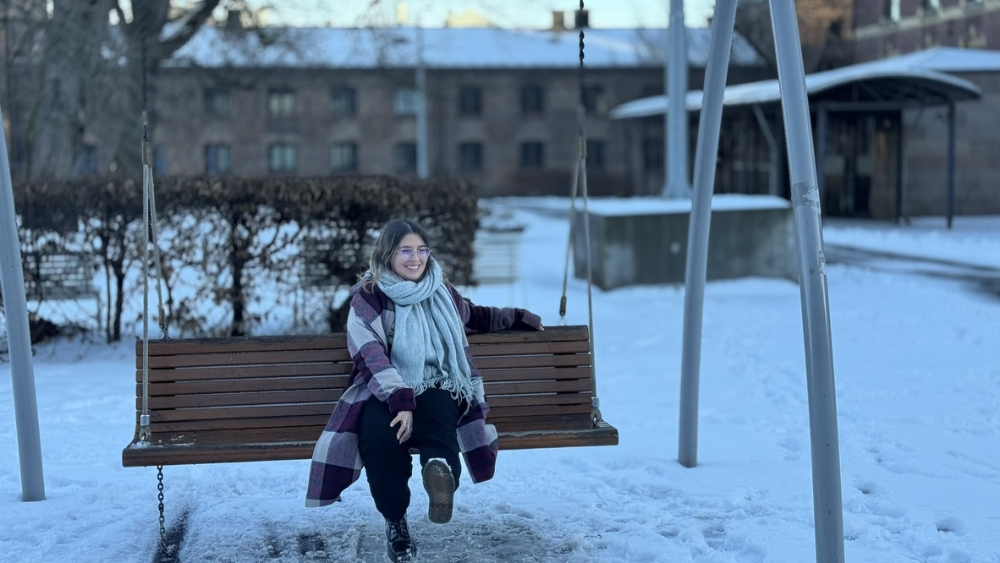

2016–2021
PhD in Particle Physics
Thesis: “Probing BSM Physics with CP-violation, Neutrinos and White Dwarfs”
Academic / Technical Profile
Astroparticle physics, data science, and reproducible computational pipelines.
PhD-level researcher with experience in astroparticle physics, scientific computing, and real-world data workflows, currently expanding into data science and machine learning.

I am a particle and astroparticle physicist with research experience spanning dark matter, compact objects, beyond-the-Standard-Model physics, and computational modelling. Alongside my academic work, I am building a stronger focus on data science and machine learning through applied work on real-world, noisy datasets. My interests lie in reproducible computational workflows, feature engineering, robust validation, and technically credible data analysis.
Science to Data Science (S2DS) industry project
The project investigated whether stress could be inferred from naturalistic eye-tracking and head IMU data collected during user sessions.
I contributed to the development of an end-to-end pipeline from raw multimodal sensor data to model-ready features. This included segmentation into fixed windows, behavioural feature extraction from eye and head signals, and evaluation of classification performance under participant-aware validation.
A central part of the work was handling noisy real-world data while preserving technical interpretability. This meant building robust preprocessing steps, designing meaningful behavioural features, and explicitly avoiding data leakage by validating across disjoint participants so that performance better reflected realistic generalisation.
My research areas include dark matter, compact stars, white dwarfs, neutron stars, neutrino physics, gravitational-wave-adjacent compact object phenomenology, and beyond-the-Standard-Model physics. My work combines theoretical modelling, numerical analysis, and scientific computing.
Thesis: “Probing BSM Physics with CP-violation, Neutrinos and White Dwarfs”
Thesis: “Physics of the QED plasma”
Research topics: first-order phase transitions, dark matter, compact stars, BSM physics.
Research topics: dark matter, compact stars, neutrinos.
Provided support in the development of the PhD research project and introduced her to the study of white dwarf cooling through new physics.
Provided support in the development of the PhD research project, including reviewing results, verifying calculations, and participating in regular discussions to refine the analysis methodology.
Assisted in the development of the Master’s thesis proposal, reviewed results, and provided feedback on the thesis.
Introduced them to the study of dark matter capture rate and stellar physics, helping to develop an understanding of the core concepts and theories and advising on the application of these ideas in ongoing research.
In parallel with research, I value scientific outreach, international collaboration, and initiatives that broaden access to science, particularly for women and younger students.
I am also co-author of a book promoting women in science: El derecho a ser científicas: colección de ensayos .